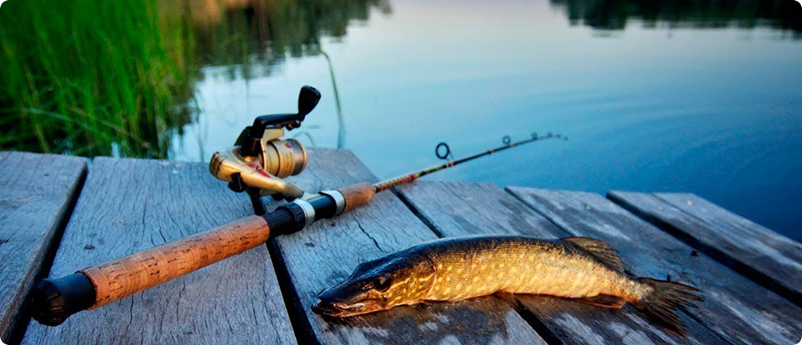
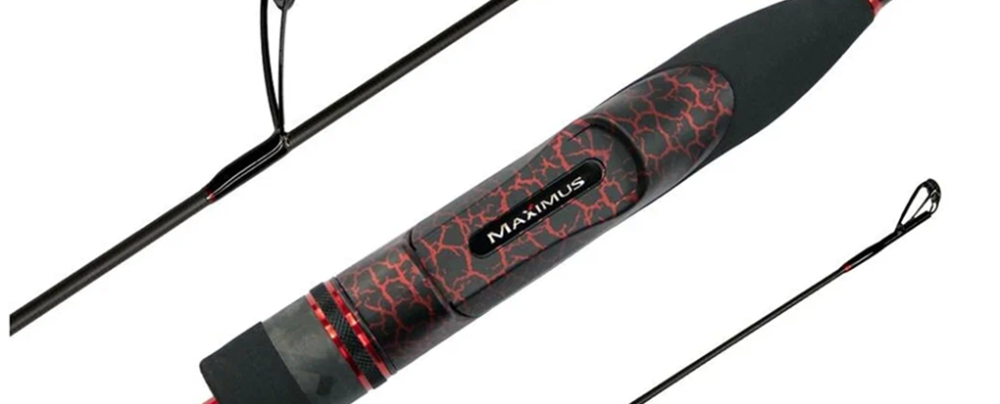
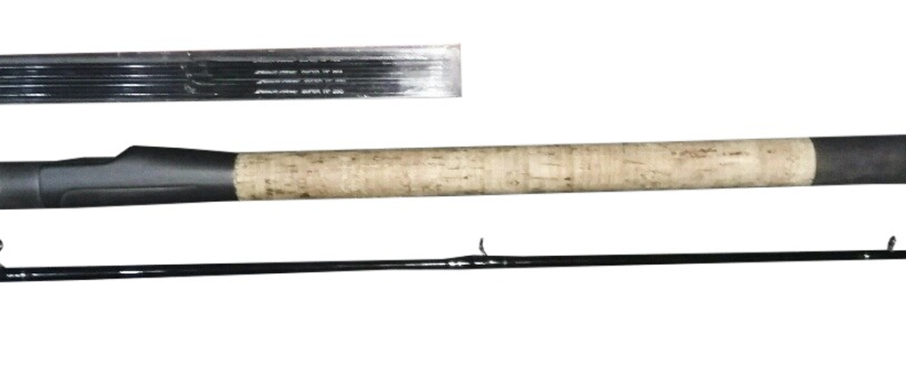
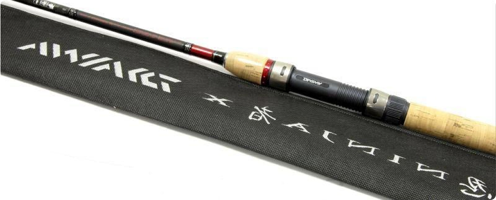
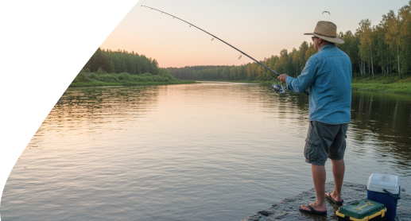

Как выбрать первый спиннинг: полный гид для начинающих
8 марта 2026
Как выбрать первый спиннинг: полный гид для начинающих
Выбираете первый спиннинг и растерялись от обилия моделей? Не волнуйтесь! Мы разложим всё по полочкам: от длины и теста до материала и строя. После прочтения вы точно будете знать, какой спиннинг купить для успешного старта в рыбалке
Почему выбор первого спиннинга — это важно?
Неправильно подобранный спиннинг может испортить всё удовольствие от рыбалки. Слишком тяжелый — устанет рука через 20 минут. Слишком мягкий — не забросите приманку на нужное расстояние. Слишком жесткий — будете терять рыбу из-за обрывов.
Хорошая новость: для новичка не нужен дорогой спиннинг! Достаточно грамотно выбрать бюджетную модель с правильными характеристиками.
Основные характеристики спиннинга: что важно знать
1. Длина спиннинга
Длина влияет на дальность заброса и удобство работы с приманками.
| Длина |
Где использовать |
Плюсы |
Минусы |
| 1.8 - 2.1 м |
Малые реки, ручьи, берега с зарослями |
Маневренность, легко пробраться сквозь кусты |
Короткий заброс |
| 2.1 - 2.4 м |
Средние реки, пруды, джиг с лодки |
Универсальность, комфорт |
- |
| 2.4 - 2.7 м |
Большие реки, озера, водохранилища |
Дальний заброс, контроль приманки |
Менее маневренный |
| 2.7 - 3.0 м+ |
Морская рыбалка, большие водоемы |
Максимальная дальность |
Тяжелый, неудобен в заросших местах |
Совет новичку:
Для первого спиннинга выбирайте длину 2.1 - 2.4 м (7-8 футов). Это золотая середина — подходит для большинства условий.
2. Тест спиннинга
Тест показывает, какой вес приманок можно забрасывать. Обычно указывается диапазон, например: 5-25 г.
| Класс |
Тест (г) |
Для каких приманок |
Тип рыбалки |
| UL (Ultra Light) |
0.5 - 7 г |
Микроджиг, мелкие блесны |
Окунь, форель, голавль |
| L (Light) |
3 - 15 г |
Воблеры, вращалки, легкий джиг |
Окунь, некрупная щука |
| ML (Medium Light) |
5 - 25 г |
Средние приманки, джиг, воблеры |
Щука, судак, жерех |
| M (Medium) |
10 - 35 г |
Тяжелые колебалки, крупный джиг |
Крупная щука, сом |
| H (Heavy) |
20 - 60 г+ |
Очень тяжелые приманки |
Трофейная рыба, морская ловля |
Совет новичку:
Берите спиннинг класса ML (5-25 г). Это универсальный вариант — подойдет для 80% ситуаций на наших водоемах.
3. Строй спиннинга
Строй определяет, как гнется удилище под нагрузкой.
Быстрый (Fast, Extra Fast):
Гнется только верхняя треть. Чувствительный, точный заброс, хорош для джига. Минус: жесткий, можно потерять рыбу при вываживании.
Средний (Moderate, Medium):
Гнется верхняя половина. Баланс между чувствительностью и прощением ошибок. Лучший выбор для новичка!
Медленный (Slow):
Гнется почти всё удилище. Дальний заброс легких приманок, мягкое вываживание. Минус: низкая чувствительность.
Совет новичку:
Выбирайте средний строй (Moderate) — он прощает ошибки и подходит для разных техник ловли.
4. Материал бланка
Стеклопластик (fiberglass)
Плюсы
Дешевый, прочный, гибкий
Минусы
Тяжелый, низкая чувствительность
Можно взять как самый первый бюджетный вариант.
Углепластик / карбон (carbon)
Плюсы
Легкий, чувствительный, мощный
Минусы
Дороже, более хрупкий
Оптимальный выбор. Ищите модели с маркировкой IM6, IM7, IM8 (чем выше число, тем лучше качество карбона)
Композит (карбон + стекло)
Плюсы
Баланс цены и качества
Минусы
-
Хороший компромисс для первого спиннинга.
Совет новичку:
Берите композит или карбон средней ценовой категории (3000-6000 руб). Не гонитесь за дорогими моделями на старте!
Как выбрать первый спиннинг: пошаговая инструкция
1
шаг
Определитесь с условиями ловли
Ответьте на вопросы:
- Где будете ловить? (река, озеро, пруд)
- С берега или с лодки?
- Какую рыбу планируете ловить? (окунь, щука, судак)
- Какие приманки хотите использовать? (джиг, воблеры, блесны)
2
шаг
Выберите длину и тест
Универсальная формула для новичка:
- Длина: 2.1 - 2.4 м (7-8 футов
- Тест:5-25 г (класс ML)
- Строй: Medium (средний)
- Материал: Карбон или композит
3
шаг
Проверьте качество в магазине
Обязательно проверьте перед покупкой:
- 1. Соедините колена: Они должны плотно входить друг в друга без люфта.
- 2. Посмотрите через бланк на свет: Кольца должны быть на одной линии.
- 3. Проверьте кольца: Ищите сколы, трещины, неровности. Качественные кольца с вставками SiC (карбид кремния).
- 4. Проверьте катушкодержатель: Плотная фиксация без люфтов.
- 5. Подержите в руках: Удобно ли лежит? Не тяжелый ли?
Топ-5 спиннингов для начинающих (2026)
Проверенные модели в разных ценовых категориях:

Maximus High Energy-X 24ML (2.4м, 5-25г)
- Композитный бланк, средний строй
- Универсальная длина, отличная чувствительность для своей цены
- Цена: ~2 500 руб
Бюджет до 3 000 руб

Black Hole Hyper 702ML (2.13м, 3-15г)
- Карбон IM7, быстрый строй
- Легкий, чувствительный, подходит для воблеров и легкого джига
- Цена: ~4 200 руб
Средний бюджет 3 000-5 000 руб

Daiwa Ninja-X Spin 240ML (2.4м, 5-25г)
- Высокомодульный карбон, отличная сборка
- Универсал для большинства условий
- Цена: ~6 500 руб
Премиум 5 000-8 000 руб
Выбирайте спиннинги
в Фишемании!
У нас огромный выбор моделей для новичков и профи.
Консультация по подбору — бесплатно!

Частые ошибки новичков при выборе спиннинга
Ошибка 1: "Куплю подешевле на пробу"
Совсем дешевые спиннинги (до 1500 руб) быстро ломаются и не дают нормальных ощущений от рыбалки. Лучше один раз взять среднюю модель за 3000-4000 руб.
Ошибка 2: "Возьму самый длинный — дальше заброшу"
Длинный спиннинг (2.7-3м) неудобен для новичка: тяжелее, сложнее управлять им в зарослях. Начните с 2.1-2.4 м.
Ошибка 3: "Чем жестче, тем лучше"
Слишком быстрый строй требует опыта. Новичку лучше средний или умеренно-быстрый строй — он прощает ошибки.
Ошибка 4: Покупка без проверки в магазине
Обязательно проверьте спиннинг перед покупкой! Кривые кольца, люфты, трещины — всё это недопустимо.
Что еще купить вместе со спиннингом?
Для полноценной рыбалки вам понадобятся:
- Катушка — безынерционная, размер 2000-3000 по классификации Shimano/Daiwa.
- Леска или плетенка — для начала подойдет плетенка 0.12-0.14 мм (8-10 lb).
- Набор приманок — виброхвосты, твистеры, воблеры, вращалки.
- Поводки — если ловите щуку (титановые или стальные).
- Чехол для спиннинга — защита при транспортировке.
Подведем итоги
Идеальный первый спиннинг для новичка:
- Длина: 2.1 - 2.4 м
- Тест: 5-25 г (класс ML)
- Строй: Средний (Moderate)
- Материал: Композит или карбон
- Бюджет: 3000-5000 руб
С таким спиннингом вы сможете освоить все основные техники ловли и понять, в каком направлении развиваться дальше!
Автор статьи: команда экспертов Фишемания
Мы занимаемся рыболовным снаряжением с 2010 года и знаем о спиннингах всё. Если у вас остались вопросы — пишите в комментариях!